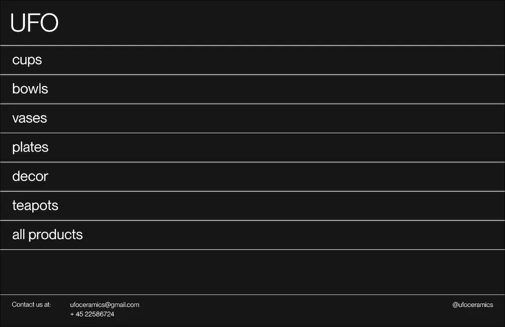
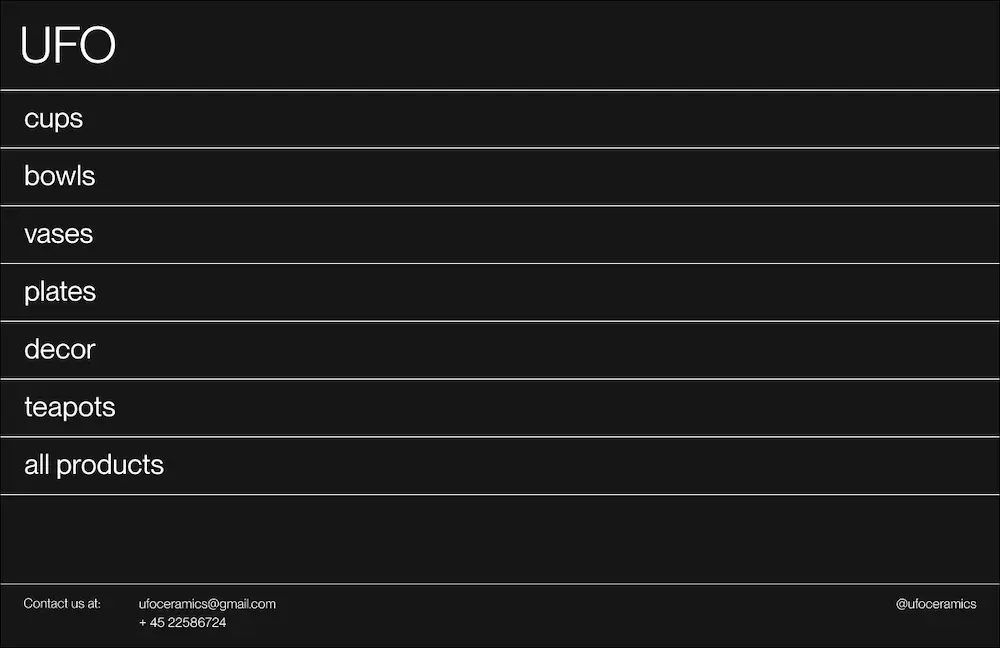

I dette forløb skabte jeg en brandidentitet og et webdesign til keramikvirksomheden UFO, som drives af arkitekterne Mia og Jens. Undervejs lærte jeg meget om responsiv kodning, der sikrer, at designet fungerer på tværs af forskellige enheder. Derudover arbejdede jeg med at skabe et strømlinet og sammenhængende webdesign, der afspejler virksomhedens æstetik og værdier. Det var en spændende proces, hvor jeg virkelig kunne kombinere mine designfærdigheder med mine nye (og sparsomme) tekniske færdigheder.
Jeg satte et moodboard sammen, med designprojekter der udtrykte den fragmenterede og brutalistiske stil jeg ønskede til projektet. Derudover ville jeg gerne inkluderer skitser fra keramikarbejdet, for at få et endnu mere arkitekt-inspireret udtryk.
Jeg legede med forskellige udtryk og fandt ud af, at jeg gerne ville skrue lidt ned for det fragmenterede udtryk, og i stedet gøre designet mere clean og moderne.
Den færdige hjemmeside til keramikvirksomheden UFO er inspireret af brutalistisk design og er skåret helt ind til benet med et minimalistisk udtryk uden overflødig pynt. Designet anvender en minimal farvepalette og en klassisk grotesk skrifttype, der understreger enkelhed, elegance og håndværk. På forsiden har jeg leget med interaktiv bevægelse, som tilfører hjemmesiden en unik personlighed og gør oplevelsen mere dynamisk og engagerende.
 
